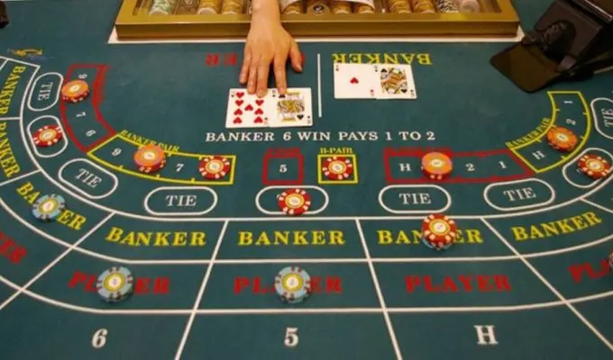
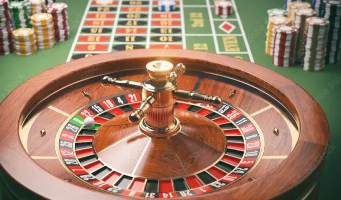
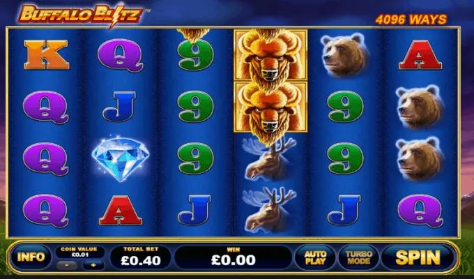
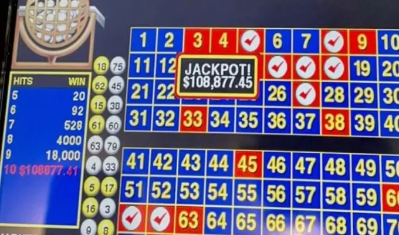

Anfänger spielen am liebsten diese fünf Casinospiele

Ihr erster Besuch in einem Casino wirft zweifellos alle möglichen Fragen auf. Sie haben mehrere Spiele zur Auswahl und müssen alle möglichen Dinge beachten. Die erste Frage, die sich den meisten neuen Spielern stellt, lautet: „Welches Spiel ist für mich als Anfänger am besten geeignet?“. Eine sehr berechtigte Frage, denn manche Casinospiele sind einfacher als andere.
Viele Casinospiele haben komplizierte Regeln, die es Anfängern schwer machen. Andere Spiele, wie zum Beispiel Poker, erfordern bestimmte Kenntnisse und Fähigkeiten. In diesem Artikel finden Sie daher einen Überblick über Spiele, die sich ideal für den Anfang als neuer Spieler im Casino eignen.
Bakkarat
Eines der einfachsten Spiele, die man im Casino finden kann, ist Baccarat. Denn bei diesem Kartenspiel müssen Sie nichts weiter tun, als Ihre Einsätze zu machen. Den Rest erledigt der Dealer.
Beim Baccarat können Sie nur auf fünf verschiedene Wettoptionen setzen. Auf die Bank, den Spieler, das Unentschieden und Bank oder Spieler Pärchen. Für Anfänger ist es ratsam, Pärchen und das Unentschieden beiseite zu lassen und nur auf den Spieler oder den Bankier zu setzen.
Diejenigen, die gerade erst mit dem Spiel beginnen, halten sich lieber an den Mindesteinsatz am Tisch. Unabhängig davon, ob es sich um ein landbasiertes oder ein Online-Casino handelt.
Roulette
Die sichersten Wettoptionen beim Roulette sind die Serien Schwarz/Rot, Gerade/Ungerade und Hoch/Tief. Bei diesen haben Sie nämlich eine Gewinnchance von knapp 50 %. Aber mehr Spaß macht es natürlich, einfach auf eine Zahl zu setzen, um die maximale Auszahlung zu kassieren.
Für neue Spieler ist es jedoch wichtig, bei Roulette mit einer einzigen Null, der europäischen Variante, zu beginnen. Denn die amerikanische Variante mit einer zusätzlichen Doppelnull hat einen viel höheren Casinovorteil.
Nicht unwichtig ist auch, dass Roulette ein relativ langsames Spiel ist. Vergleicht man das Roulettespiel mit anderen Spielen, so gibt es viel weniger Spielrunden pro Stunde. Und das ist gut für die Bankroll. Wenn es hart auf hart kommt, verlieren Sie nicht gleich Ihr ganzes Geld.
Blackjack für Anfänger

Blackjack ist nicht das einfachste Spiel im Kasino. Sie müssen bei jedem Blatt Entscheidungen treffen, und die Regeln unterscheiden sich von Tisch zu Tisch. Aber das Spiel hat in der Regel einen niedrigeren Hausvorteil als jedes andere Spiel. Und es bietet einen weiteren Vorteil, den die anderen Spiele nicht haben.
Beim Blackjack ist es nämlich durchaus möglich, eine bestimmte Strategie anzuwenden. Die bekannteste ist die Verwendung einer Strategiekarte. Auf ihr stehen alle denkbaren Hände, die man bekommen kann, plus eine Empfehlung, was statistisch gesehen die beste Entscheidung ist.
Außerdem gibt es ein paar einfache Tipps, die man einem Anfänger geben kann:
- Setzen Sie nur den minimalen Tischeinsatz
- Verwende niemals die Versicherung
- Erzählen Sie dem Dealer, dass Sie zum ersten Mal spielen, und bitten Sie ihn, Sie im Auge zu behalten
- Verwenden Sie die Strategietabelle vor jeder Entscheidung
- Machen Sie keine Verwendung von Sidebets
- Sagen Sie dass Sie wissen, was Splitten und Verdoppeln bedeutet
- Spiel niemals an einem Blackjack-Tisch, an dem die Auszahlung für einen direkten Blackjack (Ass und Zehn) weniger als 3:2 beträgt
Den Dealer um Hilfe zu bitten, mag ein wenig seltsam klingen. Und doch haben Dealer genug Erfahrung, um sicherzustellen, dass Sie keine dummen Entscheidungen treffen. Sie können Ihnen zwar nicht bei allem helfen, aber sie können Sie sicher anleiten.
Beim Blackjack muss ein neuer Spieler viele Dinge auf einmal im Auge behalten . Wenn das nicht klappt, dann ist vielleicht eines der anderen Spiele in dieser Liste ein besserer Einstieg. Wenn der Spieler jedoch kein Problem damit hat, eine Strategiekarte zu benutzen, dann lassen sich durchaus einige Gewinne erzielen.
Spielautomaten
Erfahrene Spieler werden vielleicht ein wenig überrascht sein, dass Spielautomaten auf dieser Liste stehen. Schließlich sind das nicht die Spiele, die einen ziemlich niedrigen Hausvorteil haben. Aber in dieser Übersicht suchen wir nicht nach den Spielen mit den niedrigsten Hausvorteilen. Wir suchen vielmehr nach Spielen, die für Anfänger am einfachsten zu spielen sind.
Und das gilt natürlich auch für Spielautomaten. Alles, was man wissen muss, ist, wie man Geld in den Automaten wirft und auf den Startknopf klickt. Der Rest geht ganz von selbst. Es macht keinen Sinn, sich eine Strategie auszudenken, da man bei Spielautomaten keine Strategie anwenden kann.
Der beste Rat für einen neuen Spieler ist, sich einen Spielautomaten mit einem niedrigen Mindesteinsatz zu suchen. Ein weiterer Tipp ist, dem Spieler einen bestimmten Betrag vorzuschreiben, den er bereit ist zu verlieren. Schließlich sind die Chancen, diesen Betrag zu verlieren, höher als viel Geld zu gewinnen. Wenn man mit einem niedrigen Einsatz spielt, kann man länger spielen und so das Spiel mehr genießen.
Keno
Keno hat einen wahnsinnig hohen Hausvorteil, aber es gibt zwei Elemente bei Keno, die ideal für neue Spieler sind. Sie können mit sehr niedrigen Einsätzen spielen und es gibt eine maximale Anzahl von Spielen pro Stunde.
Beim Keno können Sie die Zahlen selbst wählen oder die Maschine eine Zahl ziehen lassen. Für das Ergebnis macht das keinen Unterschied.
Da Sie nur eine maximale Anzahl von Spielen pro Stunde mit niedrigen Einsätzen spielen können, halten sich Ihre Verluste in Grenzen. Neue Spieler werden in der Regel verlieren, aber es besteht immer die Möglichkeit, dass das Glück auf Ihrer Seite ist. Wenn das der Fall ist, kann man bei diesem Casino-Spiel immer noch sehr schöne Beträge gewinnen.